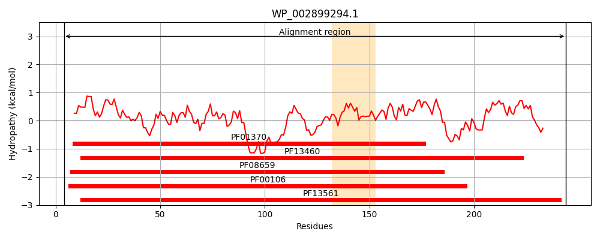
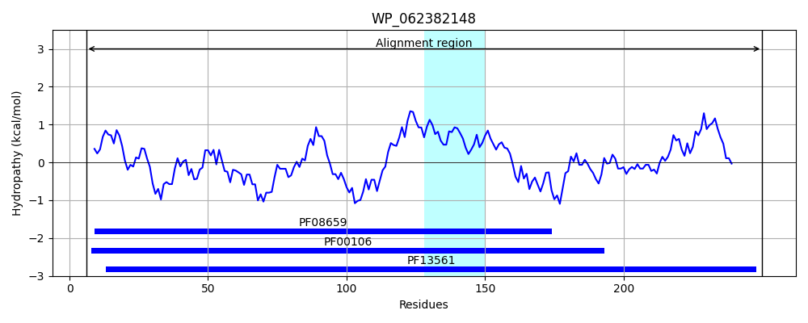
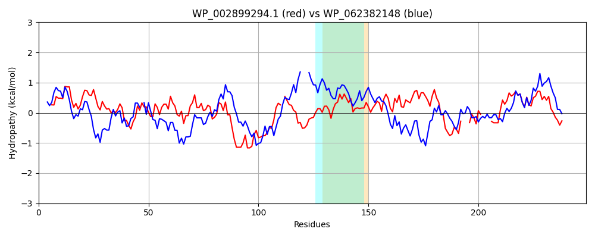

Hit Accession: WP_062382148
Hit TCID: 1.A.115.1.5
Hit Description: gnl|BL_ORD_ID|21287 gnl|TC-DB|WP_062382148.1|1.A.115.1.5 SDR family oxidoreductase [Pseudomonas abietaniphila]
Mach Len: 249
e:0.000000
Query TMS Count : 1
Hit TMS Count: 1
TMS-Overlap Score: 0.850000
Predicted Substrates:None
BLAST Alignment:
Score: 290 , Bit scores: 116 bits, E-value: 1.1e-31, Alignment length: 249, Percentage identity: 32
Query: 4 EGKIALVTGASRGIGRAIAETLVARGAKVIGTATSESGAQAISDYLGANGKGLMLNVTDPASIESVLENVRAEFGEVDILVNNAGITRDNLLMRMKDDEWNDIIETNLSSV-FRLSKAVMRAMMKKRHGRIITIGSVVGTMGNAGQANYAAAKAGLIGFSKSLAREVASRGITVNVVAPGFIETDMTRALTDE---QRAGTL----AAVPAGRLGTPNEIASAVAFLASDEASYITGETLHVNGGMYMV 244
EGKIALVTG + GIG A A+ GA V T ++ A +G N G+ ++ T+ ++++ + E G +D+L NAG L + + ++ D + N+ V F + KA+ + + +I GS G+ G A + YAA+KA + F+++ ++ R + VN ++PG T L Q+ G L + +P GR+G P EIA+A FLASD+AS++ G L V+GG +
Sbjct: 6 EGKIALVTGGTTGIGLATAKRFAEEGAYVYITGRRQAELDAAVARVG-NATGVQVDSTNLEQLDALYRQIGTEKGRLDVLFANAGGGSMLPLGDITEAQYQDTFDRNVKGVLFTVQKALP---LLAKGASVILTGSTAGSSGTAAFSVYAASKAAVRAFARNWILDLKDRNVRVNTLSPGATRTPGLVDLAGPDAAQQQGLLDYLASQIPMGRVGEPEEIAAAALFLASDDASFVNGIELFVDGGQAQI 250 | Protein Hydropathy Plots: |
|---|
|  |  |
Pairwise Alignment-Hydropathy Plot:
|
|---|
|  |